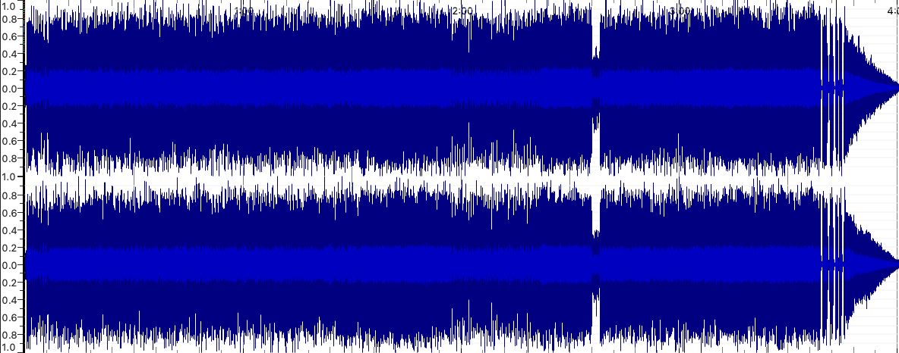
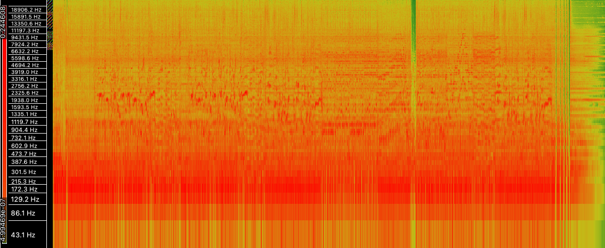
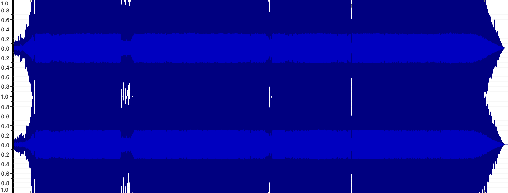
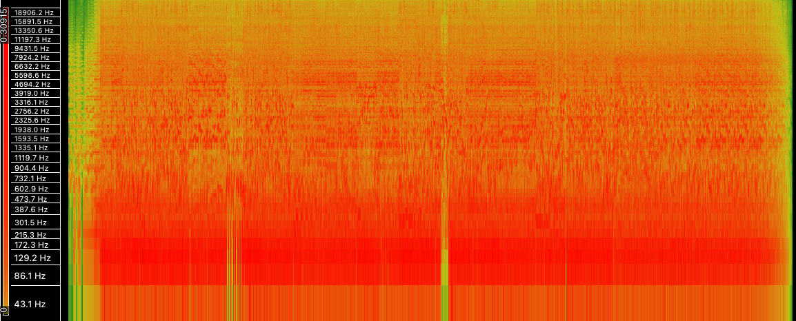
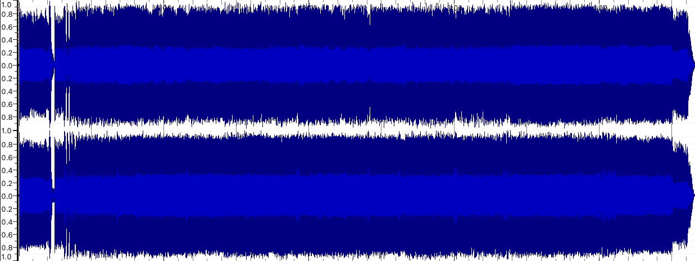
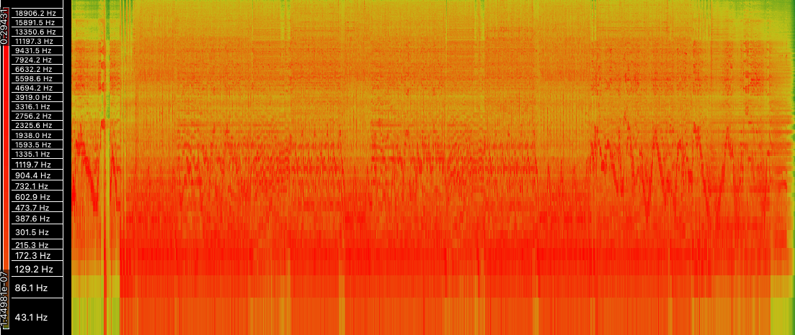

Music as Sound
Audio Description
| Track 1 | Track 2 | Track 3 | |
|---|---|---|---|
| Title | In The Dragon's Den | ANGEL OF SALVATION | Magic and Mayhem |
| Artist | Symphony X | GALNERYUS | Yngwie Malmsteen's Rising Force |
| Composer | Symphony X | SYU | Yngwie Malmsteen |
| Copyright Info | ℗©1998 InsideOutMusic | ℗©2012 VAP inc. | ℗©2005 Malmsteen Music |
| Genre | Progressive Metal | Power Metal | Neoclassical Metal |
| Source | YouTube | YouTube | YouTube |
| File/Audio Format | MP3 | MP3 | MP3 |
| Number of Channels | 2 Channels | 2 Channels | 2 Channels |
| Sample Rate | 44.1kHz | 44.1kHz | 44.1kHz |
| Bits Per Second | 320kbps | 320kbps | 320kbps |
| Duration | 04:01 | 14:42 | 04:40 |
Audio Analysis
Having used spectrograms over the years for music production, I've found them immensely helpful in seeing the phase relationship between certain elements occurring simultaneously within the same frequency range. For example, sidechaining a kick drum to a synth bass - while I also use waveform analysis for this same issue (a combination of both is best), I do prefer using a spectrogram after the initial waveform analysis to ensure the final sound is as it should be. A waveform just doesn't display the same information to allow for accurately fixing phase - despite it being easy to catch the initial phase issue, it can still lead to disjointed sounds. Another huge advantage of spectrograms is being able to see specific frequencies and the duration of said frequencies - when these are clearly visible, it allows us to see which notes are being played at a given time, which isn't possible with waveform analysis, as it's based on amplitude instead of frequency.
Below are the output files from Sonic Visualiser.
In The Dragon's Den
Waveform & Spectrogram
 ANGEL OF SALVATION
Waveform & Spectrogram
 Magic and Mayhem
Waveform & Spectrogram
 